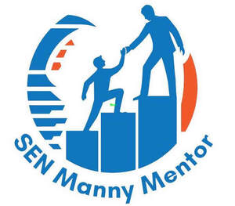

Trade Mark Journal No.2025/048 28 November 2025
UK00004259321 4 September 2025 (9,35,37,39,41,45)
Mark 1
Mark 2

Mark 3
- Class 9
- Downloadable videos; Pre-recorded videos; Prerecorded music videos; Pre-recorded videos discs; Video recordings; Prerecorded motion picture videos; Downloadable video recordings; Video tapes; Downloadable video recordings featuring music; Downloadable video files; Pre-recorded video tapes featuring games; Video tapes with recorded animated cartoons; Prerecorded video tapes featuring music; Prerecorded video cassettes featuring cartoons; Video disks with recorded animated cartoons; Video cassettes; Cassettes [video]; Recorded video tapes; Prerecorded video cassettes featuring animated fictional stories; Computer programs for editing images, sound and video; Musical video recordings; Downloadable video game programs; Pre-recorded audio tapes featuring games; Interactive video software; Downloadable movies; Interactive video game programs; Downloadable podcasts; Video receivers; Audio and video receivers.
- Class 35
- Career advisory services (other than education and training advice); Career information and advisory services (other than educational and training advice); Business information services provided online from a computer database or the internet; Online marketing; Providing academic course administration services relating to online course registration; Advertising the goods and services of online vendors via a searchable online guide; Producing promotional videotapes, video discs, and audio visual recordings; Retail services connected with the sale of clothing and clothing accessories; Advertising in periodicals, brochures and newspapers; Publication of publicity materials and texts; Dissemination of advertising material [leaflets, brochures and printed matter]; Electronic publication of printed matter for advertising purposes; Publication of publicity materials on-line; Dissemination of advertising material [leaflets, brochure and printed matter]; Publication of printed matter for advertising purposes; Distribution and dissemination of advertising materials [leaflets, prospectuses, printed material, samples]; Distribution of printed promotional material by post; Design of advertising materials; Dissemination of advertising and promotional materials; Publication of publicity materials; Dissemination of advertising materials; Distribution of flyers, brochures, printed matter and samples for advertising purposes; Publication of printed matter for advertising purposes in electronic form; Promoting the sale of goods and services of others through the distribution of printed material and promotional contests; Distribution of advertising materials; Production of advertising materials; Dissemination of advertising via online communications networks; Online advertising via a computer communications network; On-line advertising on computer communication networks; On-line advertising via a computer communications network; Online business networking services; Dissemination of advertising for others via an on-line communications network on the internet; Business information services provided online from a global computer network or the internet; Providing a searchable online advertising guide featuring the goods and services of other on-line vendors on the internet; Online advertising services; Providing a searchable online advertising guide featuring the goods and services of online vendors; Online advertising; Online community management services; Online advertising network matching services for connecting advertisers to websites; Online advertising on a computer network; Online advertising on computer networks; Brand strategy services; Employment recruiting consultancy; Providing employment counseling services; Career placement consulting services; Management assistance for promoting business; Providing assistance in the field of business promotion; Provision of advice relating to the recruitment of graduates; Business management advice and assistance; Management advice relating to the recruitment of staff; Providing advice in the field of business management and marketing; Providing assistance in the field of business management and planning; Assistance relating to recruitment and placement of staff.
- Class 37
- Clothing repair [mending clothing].
- Class 39
- Transportation of clothing.
- Class 41
- Educational services provided by special needs assistants; Educational assistance services for persons with individual needs; Primary education services; Educational services for providing courses of education; Education; Education services; Provision of physical education; Physical education services; Training and education services; Education and training services; Linguistic education and training services; Provision of training and education; Provision of education and training; Medical education services; Higher education services; Vocational education and training services; Technological education services; Physical education facilities (Provision of -); Primary education services relating to literacy; Education services relating to vocational training; Providing of education; Vocational education relating to personal safety; Secondary school educational services; Musical education services; Entertainment, education and instruction services; Services of schools [education]; Preparation of special effects for entertainment purposes; Education services relating to business training; Vocational education relating to first aid; Education services relating to the training of personnel in food technology; Education information services; Education services relating to nutrition; Kindergarten services [education or entertainment]; Provision of education courses; Academy services (Education -); Education academy services; Academy education services; Adult education services; Provision of facilities for education; Education and training; Adult education services relating to environmental issues; Education services relating to health; Legal education services; Providing continuing medical education courses; Guidance (Vocational -) [education or training advice]; Vocational guidance [education or training advice]; Physical education instruction; Vocational education relating to protection of personal property; Vocational education; Educational and training services; Physical education; Sporting education services; Educational and training services relating to healthcare; Computer education training services; Provision of educational entertainment services for children in after school centers; Pre-school education; Education services relating to conservation; Vocational education relating to home safety; Sports education services; Education and training services in the field of occupational health and safety; Educational services providing instruction in land policy; Education services relating to conservation of the environment; Educational services provided by institutes of higher education; Career advisory services (education or training advice); Educational services for providing courses of instruction; Providing continuing dental education courses; Educational services provided by institutes of further education; Health education; Education services relating to hygiene; Education services relating to food technology; Further education; Education services relating to the veterinary profession; Adult education services relating to law; Educational institute services; Training or education services in the field of life coaching; Conducting educational support programmes for healthcare professionals; Education information; Information (Education -); Adult education services relating to medicine; Educational certification services, namely, providing training and educational examination; Education services relating to design; Education and instruction; Educational services; Education services relating to waiting; Provision of educational services relating to health; Education services for imparting language teaching methods; Education services related to the arts; Educational and teaching services; Education services relating to quality services; University education services; Education services relating to cooking; Education services relating to industry; Education services relating to communication skills; Education and training services in relation to real estate management; Provision of training courses in personal development; Adult education services relating to finance; Computer assisted physical education services; Physical fitness education services; Education and training services in relation to business management; Education services relating to medicine; Educational courses (Provision of -); Educational services provided for teachers of children; Physical health education; Advisory services relating to education; Management of education services; Management education services; Consultation services relating to business education; Education services relating to yoga; Education services relating to sports; Education academy services for teaching languages; Educational services providing workshops in land policy; Special event planning; Educational services relating to first aid; Providing education courses relating to the travel industry; Club education services; Education services relating to physical fitness; Education services relating to the horticultural industry; Religious education; Education (Religious -); Providing continuing legal education courses; Education services relating to water safety; Special event planning consultation; Nursery school services [educational]; Educational assessment services; Education services for managerial staff; Education services relating to water; Education services relating to religion; Adult education services relating to management; Providing of training in the field of health care and nutrition; Education services relating to music; Provision of education courses relating to electronics; Career information and advisory services (educational and training advice); Educational services in the nature of correspondence schools; Educational services provided for children; Education services relating to languages; Educational and training services relating to sport; Tutoring; Providing tutoring in the field of geometry; Tutoring at cram schools; Providing of training, teaching and tuition; Teaching services; School services for the teaching of languages; Teacher training services; Educational services for teaching keyboard writing; Sports tuition, coaching and instruction; Computer assisted teaching services; Educational services for teaching manual writing; School courses relating to study assistance; Teaching in the field of remedial reading; Providing tutorial sessions in the field of mathematics; School services for the teaching of art; Education, teaching and training; Language teaching services; Pre-school teaching; Services for arranging teaching programmes; Teaching academy services; Arranging and conducting of day school courses for adults; Providing computer assisted courses of instruction; Education academy services for teaching acting; Teaching; Remedial tuition; Educational services for teaching acting; Arranging for students to participate in educational courses; Teaching services for communication skills; Education academy services for teaching construction drafting; Arranging of courses of instruction; Educational services for the teaching of languages; Teaching services relating to business assistance; Arranging of classes; Providing online courses of instruction; School services for the teaching of construction draughting; Remedial tuition in language; Services for teaching languages; Arranging and conducting of educational courses; Arranging and conducting of in-person educational forums; Arranging of training courses; Arranging teaching programmes; Providing courses of instruction at college level; Education and instruction services; Arranging and conducting of soccer training programs; Arrangement of training courses in teaching institutes; Providing computer-delivered educational testing and assessments; Providing courses of instruction; Conducting distance learning instruction at the college level; Arranging and conducting of classes; Arranging and conducting of training courses; Educational services relating to the teaching of french; Conducting instructional courses; Providing educational entertainment services for children in after-school centers; Academic mentoring of school age children; Arranging and conducting of youth soccer training programs; Business mentoring services; Computer assisted education services; Educational establishments providing courses of instruction (Services of -); Arranging technical instruction courses; Arranging professional workshop and training courses; Coaching services; Perceptual teaching services; Instructional and training services; Conducting classes in nutrition; Conducting of classes; Conducting distance learning instruction at the graduate level; Educational services for teaching transcription techniques; Providing courses of training; Teaching by correspondence courses; Providing online training seminars; Teaching assessments for counteracting learning difficulties; Career counseling [education]; Instruction in the writing of computer programs; Career counselling [training and education advice]; Teaching at elementary schools; School services; Conducting of educational courses; Conducting of instructional, educational and training courses for young people and adults; Computer assisted training services; Engineering training college services; Teaching of diet education; Courses for the development of consulting skills; Conducting of educational courses in science; Education academy services for teaching art history; Music tuition by correspondence courses; Workshops (Arranging and conducting of -) [training]; Arranging and conducting of workshops [training]; Arranging and conducting of training workshops; Physical-education services; Correspondence school services; Conducting distance learning instruction at the university level; Perceptual tuition services; Providing courses of instruction at high school level; Educational services provided by a school; Career counselling and coaching; Provision of instruction courses in finance; Tuition; Online education services; Providing courses of instruction at post-graduate level; Distance learning services provided online; Educational services relating to the writing of computer programs; Medical training and teaching; Career counselling relating to education and training; Language teaching; Remedial tuition in speech; Conducting training courses relating to nutrition online; Conducting fitness classes; Arranging and conducting of lectures for training purposes; Education services for imparting data processing teaching methods; Conducting of educational courses in engineering; Providing continuing nursing education courses; Arranging for students to participate in educational activities; Tuition in gymnastics; Adult tuition; Education and training consultancy; Teaching services relating to pedagogy techniques; Training services for nannies; Educational services in the nature of coaching; Teaching services relating to the dental field; Arranging and conducting of educational seminars; Training of teachers; Education and training in the field of business management; Providing courses of instruction for young people; Training; Training and further training consultancy; Coaching [training]; Training courses; Vocational training; Training and instruction; Personnel training; Training consultancy; Employment training; Training services; Vocational skills training; Organisation of training seminars; Advanced training; Organisation of training; Practical training; Providing of training; Providing training; Conducting training seminars; Training in sports; Training in philosophy; Business training; Provision of training courses; Provision of training; Career and vocational training; Conducting workshops [training]; Training in administration; Vocational training services; Life coaching (training); Personal coaching [training]; Vocational training courses (Provision of -); Workshops for training purposes; Vocational skills training (Provision of -); Training in business skills; Consultancy relating to vocational skills training; Computerised training in career counselling; Conducting training seminars for clients; Management training consultancy services; Providing facilities for educational purposes; Planning of seminars for educational purposes; Planning of lectures for educational purposes; Planning of conferences for educational purposes; Arrangement of seminars for educational purposes; Educational and entertainment services, namely, providing motivational speaking services; Online entertainment services; Providing online electronic publications; On-line entertainment; Education examination; Providing information about online education; Online gaming services; Computer education training; Provision of education on-line from a computer database or via the internet or extranets; Online interactive entertainment; Academies [education]; Education services relating to fashion; Providing training courses on business management; Production of videos; Hire of videos; Production of training videos; Services for the showing of video recordings; Provision of non-downloadable videos; Providing online videos, not downloadable; Exhibition of video films; Production of pre-recorded video films; Production of video recordings; Providing on-line videos, not downloadable; Production of video and audio recordings; Entertainment services for matching users with audio and video recordings; Video recordings [not downloadable] provided from the internet; Video recording services; Audio and video editing services; Audio and video recording services; Audio and video production, and photography; Audio, video and multimedia production, and photography; Conducting educational support programmes for carers; Providing courses of training for young people; Training relating to employment skills; Provision of training courses for young people in preparation for careers; Provision of training courses for young people in preparation for vocations; Provision of training courses for young people in preparation for employment; Coaching; Organisation of youth training schemes; Arranging and conducting of workshops and seminars in self-awareness; Arranging and conducting of youth American football training programs; Consultancy services relating to the development of training courses; Courses (Training -) relating to research and development; Educational and training programs in the field of risk management; Arranging of seminars relating to training; Vocational guidance; Organising of education seminars; Esports coaching; Training in the development of computer programs; Organising of business training; Political speech training and coaching; Consultancy services relating to the education and training of management and of personnel; Advisory services relating to training; Conducting educational workshops in the field of business; Organisation of seminars relating to education; Conducting workshops and seminars in personal awareness; Organisation of continuing educational seminars; Consultancy services relating to engineering training; Conducting of instructional seminars.
- Class 45
- Babysitting services; Babysitting; Nanny services; Provision of emotional support to families; Providing emotional support to cancer patients and their families via interactive online forums; Providing personal support services for cancer patients and their families; Providing personal support services for families of patients with life threatening disorders; Computer assisted litigation support; Legal support services; Bereavement support; Litigation support services; Providing information relating to personal body guarding services; Providing patient advocate services to hospital patients and patients in long term care facilities.
SEN Manny Mentor LTD